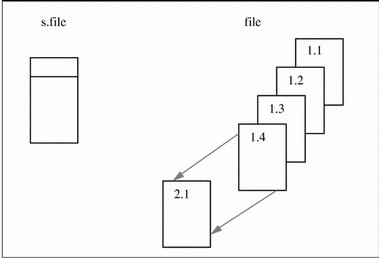
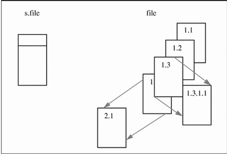
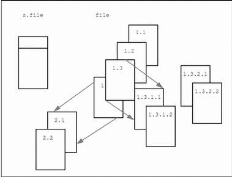

Chapter 5 SCCS Source Code Control System
Coordinating write access to source files is important when changes can be made by several people. Maintaining a record of updates allows you to determine when and why changes were made.
The Source Code Control System (SCCS) allows you to control write access to source files, and to monitor changes made to those files. SCCS allows only one user at a time to update a file, and records all changes in a history file.
SCCS allows you to:
-
Retrieve copies of any version of the file from the SCCS history.
-
Check out and lock a version of the file for editing, so that only you can make changes to it. SCCS prevents one user from unwittingly "clobbering" changes made by another.
-
Check in your updates to the file. When you check in a file, you can also supply comments that summarize your changes.
-
Back out changes made to your checked-out copy.
-
Inquire about the availability of a file for editing.
-
Inquire about differences between selected versions.
-
Display the version log summarizing the changes checked in so far.
The sccs Command
The Source Code Control System is composed of the sccs(1) command, which is a front end for the utility programs in the /usr/ccs/bin directory. The SCCS utility programs are listed in Table 5-2.
The sccs create Command
The sccs create command places your file under SCCS control. It creates a new history file, and uses the complete text of your source file as the initial version. By default, the history file resides in the SCCS subdirectory.
$ sccs create program.c program.c: 1.1 87 lines
The output from SCCS tells you the name of the created file, its version number (1.1), and the count of lines.
To prevent the accidental loss or damage to an original, sccs create makes a second link to it, prefixing the new filename with a comma (referred to as the comma-file.) When the history file has been initialized successfully, SCCS retrieves a new, read-only version. After you have verified the version against its comma-file, you can remove that file.
$ cmp ,program.c program.c (no output means that the files match exactly $ rm ,program.c
Do not try to edit the read-only version that SCCS retrieves. Before you can edit the file, you must check it out using the sccs edit command described below.
To distinguish the history file from a current version, SCCS uses the `s.' prefix. Owing to this prefix, the history file is often referred to as the s.file (s-dot-file). For historical reasons, it may also be referred to as the SCCS-file.
The format of an SCCS history file is described in sccsfile(4).
Basic sccs Subcommands
The following sccs subcommands perform the basic version-control functions. They are summarized here, and, except for create, are described in detail under "sccs Subcommands ".
- create
-
Initialize the history file and first version, as described above.
- edit
-
Check out a writable version (for editing). SCCS retrieves a writable copy with you as the owner, and places a lock on the history file so that no one else can check in changes.
- delta
-
Check in your changes. This is the complement to the sccs edit operation. Before recording your changes, SCCS prompts for a comment, which it then stores in the history file version log.
- get
-
Retrieve a read-only copy of the file from the s.file. By default, this is the most recent version. While the retrieved version can be used as a source file for compilation, formatting, or display, it is not intended to be edited or changed in any way. (Attempting to bend the rules by changing permissions of a read-only version can result in your changes being lost.)
If you give a directory as a filename argument, sccs attempts to perform the subcommand on each s.file in that directory. Thus, the command:
sccs get SCCS
retrieves a read-only version for every s.file in the SCCS subdirectory.
- prt
-
Display the version log, including comments associated with each version.
Deltas and Versions
When you check in a version, SCCS records only the line-by-line differences between the text you check in and the previous version. This set of differences is known as a delta. The version that is retrieved by an edit or get is constructed from the accumulated deltas checked in so far.
The terms "delta" and "version" are often used synonymously. However, their meanings aren't exactly the same; it is possible to retrieve a version that omits selected deltas (see "Excluding Deltas from a Retrieved Version ").
SIDs
An SCCS delta ID, or SID, is the number used to represent a specific delta. This is a two-part number, with the parts separated by a dot ( . ). The SID of the initial delta is 1.1 by default. The first part of the SID is referred to as the release number, and the second, the level number. When you check in a delta, the level number is incremented automatically. The release number can be incremented as needed. SCCS also recognizes two additional fields for branch deltas (described under "Branches ").
Strictly speaking, an SID refers directly to a delta. However, it is often used to indicate the version constructed from a delta and its predecessors.
ID Keywords
SCCS recognizes and expands certain keywords in a source file, which you can use to include version-dependent information (such as the SID) into the text of the checked-in version. When the file is checked out for editing, ID keywords take the following form:
%C%
where C is a capital letter. When you check in the file, SCCS replaces the keywords with the information they stand for. For example, %I% expands to the SID of the current version.
You would typically include ID keywords either in a comment or in a string definition. If you do not include at least one ID keyword in your source file, SCCS issues the diagnostic:
No Id Keywords (cm7)
For more information about ID keywords, refer to "Incorporating Version-Dependent Information by Using ID Keywords ".
sccs Subcommands
Checking Files In and Out
The following subcommands are useful when retrieving versions or checking in changes.
Checking Out a File for Editing: sccs edit
To edit a source file, you must check it out first using sccs edit. (The sccs edit command is equivalent to using the -c option to sccs get.)
SCCS responds with the delta ID of the version just retrieved, and the delta ID it assigna when you check in your changes.
$ sccs edit program.c 1.1 new delta 1.2 87
You can then edit it using a text editor. If a writable copy of the file is present, sccs edit issues an error message; it does not overwrite the file if anyone has write access to it.
Checking in a New Version: sccs delta
Having first checked out your file and completed your edits, you can check in the changes using sccs delta.
Checking a file in is also referred to as making a delta. Before checking in your updates, SCCS prompts you for comments. These typically include a brief summary of your changes.
$ sccs delta program.c comments?
Comments should be meaningful, since you may return to the file one day.
You can extend the comment to an additional input line by preceding the NEWLINE with a backslash:
$ sccs delta program.c comments? corrected typo in widget(), \ null pointer in n_crunch() 1.2 5 inserted 3 deleted 84 unchanged
SCCS responds by noting the SID of the new version, and the numbers of lines inserted, deleted and unchanged. Changed lines count as lines deleted and inserted. SCCS removes the working copy. You can retrieve a read-only version using sccs get.
Think ahead before checking in a version. Creating deltas after each minor edit can become excessive. On the other hand, leaving files checked out for so long that you forget about them can inconvenience others.
It is important to check in all changed files before compiling or installing a module for general use. A good technique is to:
-
Edit the files you need.
-
Make all necessary changes and tests.
-
Compile and debug the files until you are satisfied.
-
Check them in, retrieve read-only copies with get.
-
Recompile the module.
Retrieving a Version: sccs get
To get the most recent version of a file, use the command:
sccs get filename
For example:
$ sccs get program.c 1.2 86
retrieves program.c, and reports the version number and the number of lines retrieved. The retrieved copy of program.c has permissions set to read-only.
Do not change this copy of the file, since SCCS does not create a new delta unless the file has been checked out. If you force changes into the retrieved copy, you may lose them the next time someone performs an sccs get or an sccs edit on the file.
Reviewing Pending Changes: sccs diffs
Changes made to a checked-out version, which are not yet checked in, are said to be pending. When editing a file, you can find out what your pending changes are using sccs diffs. The diffs subcommand uses diff(1) to compare your working copy with the most recently checked-in version.
$ sccs diffs program.c
------ program.c ------
37c37
< if (((cmd_p - cmd) + 1) == l_lim) {
---
> if (((cmd_p - cmd) - 1) == l_lim) {
Most of the options to diff can be used. To invoke the -c option to diff, use the -C argument to sccs diffs.
Deleting Pending Changes: sccs unedit
sccs unedit backs out pending changes. This comes in handy if you damage the file while editing it and want to start over. unedit removes the checked-out version, unlocks the history file, and retrieves a read-only copy of the most recent version checked in. After using unedit, it is as if you had not checked out the file at all. To resume editing, use sccs edit to check the file out again. (See also "Repairing a Writable Copy: sccs get -k -G ".)
Combining delta and get: sccs delget
sccs delget combines the actions of delta and get. It checks in your changes and then retrieves a read-only copy of the new version. However, if SCCS encounters an error during the delta, it does not perform the get. When processing a list of file names, delget applies all the deltas it can, and if errors occur, omits all of the get actions.
Combining delta and edit: sccs deledit
sccs deledit performs a delta followed by an edit. You can use this to check in a version and immediately resume editing.
Retrieving a Version by SID: sccs get -r
The -r option allows you to specify the SID to retrieve:
$ sccs get -r1.1 program.c 1.1 87
Retrieving a Version by Date and Time: sccs get -c
In some cases, you do not know the SID of the delta you want, but you do know the date on (or before) it was checked in. You can retrieve the latest version checked in before a given date and time using the -c option and a date-time argument of the form:
-cyy [mm [dd [hh [mm [ss ]]]]]
For example:
$ sccs get -c880722120000 program.c 1.2 86
retrieves whatever version was current as of July 22, 1988 at 12:00 noon. Trailing fields can be omitted (defaulting to their highest legal value), and punctuation can be inserted in the obvious places; for example, the above line could be written as:
sccs get -c"88/07/22 12:00:00" program.c
Note -
Year 2000 issue. SCCS continues to use a two-digit year representation in the date format. Sun has adopted the proposed specification (XCU5) from the X/Open group that states that values of "yy" from 69 through 99 are to be interpreted as 1969 through 1999 respectively, and values of "yy" from 00 through 68 are to be interpreted as 2000 through 2068 respectively.
Repairing a Writable Copy: sccs get -k -G
Without checking out a new version, sccs get -k -Gfilename retrieves a writable copy of the text, and places it in the file specified by `-G'. This can be useful when you want to replace or repair a damaged working copy using diff and your editor.
Incorporating Version-Dependent Information by Using ID Keywords
As mentioned above, SCCS allows you to include version-dependent information in a checked-in version through the use of ID keywords. These keywords, which you insert in the file, are automatically replaced by the corresponding information when you check in your changes. SCCS ID keywords take the form:
%C%
where C is an uppercase letter.
For instance, %I% expands to the SID of the most recent delta. %W% includes the filename, the SID, and the unique string @(#) in the file. This string is searched for by the what command in both text and binary files (allowing you to see from which source versions a file or program was built). The %G% keyword expands to the date of the latest delta. Other ID keywords and the strings they expand to are listed in Table 5-1.
Note -
Defining a string in this way allows version information to be compiled into the C object file. If you use this technique to put ID keywords into header (.h) files, use a different variable in each header file. This prevents errors from attempts to redefine the (static) variables.
To include version dependent information in a C program, use a line such as:
static char SccsId[ ] = "%W%\t%G%";
If the file were named program.c, this line would expand to the following when version 1.2 is retrieved:
static char SccsId[ ] = "@(#)program.c 1.2 08/29/80";
Since the string is defined in the compiled program, this technique allows you to include source-file information within the compiled program, which the what command can report:
$ cd /usr/ucb $ what sccs sccs sccs.c 1.13 88/02/08 SMI
For shell and similar scripts, you can include ID keywords within comments:
# %W% %G% . . .
If you check in a version containing expanded keywords, the version-dependent information will no longer be updated. To alert you to this situation, SCCS gives you the warning:
No Id Keywords (cm7)
when a get, edit, or create finds no ID keywords.
Making Inquiries
The following subcommands are useful for inquiring about the status of a file or its history.
Seeing Which Version Has Been Retrieved: The what Command
Since SCCS allows you (or others) to retrieve any version in the file history, there is no guarantee that a working copy present in the directory reflects the version you want. The what command scans files for SCCS ID keywords. It also scans binary files for keywords, allowing you to see from which source versions a program was compiled.
$ what program.c program
program.c:
program.c 1.1 88/07/05 SMI;
program:
program.c 1.1 88/07/05 SMI;
In this case, the file contains a working copy of version 1.1.
Determining the Most Recent Version: sccs get -g
To see the SID of the latest delta, you can use sccs get -g:
$ sccs get -g program.c 1.2
In this case, the most recent delta is 1.2. Since this is more recent than the version reflected by what in the example above, you would probably want to use get for the new version.
Determining Who Has a File Checked Out: sccs info
To find out what files are being edited, type:
sccs info
This subcommand displays a list of all the files being edited, along with other information, such as the name of the user who checked out the file. Similarly, you can use
sccs check
which silently returns a non-zero exit status if anything is being edited. This can be used within a makefile to force make(1S) to halt if it should find that a source file is checked out.
If you know that all the files you have checked out are ready to be checked in, you can use the following to process them all:
sccs delta 'sccs tell -u'
tell lists only the names of files being edited, one per line. With the -u option, tell reports only those files checked out to you. If you supply a username as an argument to -u, sccs tell reports only the files checked out to that user.
Displaying Delta Comments: sccs prt
sccs prt produces a listing of the version log, also referred to as the delta table, which includes the SID, time and date of creation, and the name of the user who checked in each version, along with the number of lines inserted, deleted, and unchanged, and the commentary:
$ sccs prt program.c D 1.2 80/08/29 12:35:31 pers 2 1 00005/00003/00084 corrected typo in widget(), null pointer in n_crunch() D 1.1 79/02/05 00:19:31 zeno 1 0 00087/00000/00000 date and time created 80/06/10 00:19:31 by zeno
To display only the most recent entry, use the -y option.
Updating a Delta Comment: sccs cdc
If you forget to include something important in a comment, you can add the missing information using:
sccs cdc -r sid
The delta must be the most recent (or the most recent in its branch, see "Branches "). Also, you must either be the user who checked the delta in, or you must own and have permission to write on both the history file and the SCCS subdirectory. When you use cdc, SCCS prompts for your comments and inserts the new comment you supply:
$ sccs cdc -r1.2 program.c comments? also taught get_in() to handle control chars
The new commentary, as displayed by prt, looks like this:
$ sccs prt program.c D 1.2 80/08/29 12:35:31 pers 2 1 00005/00003/00084 also taught get_in() to handle control chars *** CHANGED *** 88/08/02 14:54:45 pers corrected typo in widget(), null pointer in n_crunch() D 1.1 79/02/05 00:19:31 zeno 1 0 00087/00000/00000 date and time created 80/06/10 00:19:31 by zeno
Comparing Checked-In Versions: sccs sccsdiff
To compare two checked-in versions, use the following to see the differences between delta 1.1 and delta 1.2.
$ sccs sccsdiff -r1.1 -r1.2 program.c
Displaying the Entire History: sccs get -m -p
If you want to see a listing of all changes made to the file and the delta in which each was made, you can use the -m and -p options to get:
$ sccs get -m -p program.c 1.2 1.2 #define L_LEN 256 1.1 1.1 #include <stdio.h> 1.1 . . . 84
To find out what lines are associated with a particular delta, you can pipe the output through grep(1V):
$ sccs get -m -p program.c | grep '^1.2'
You can also use -p by itself to send the retrieved version to the standard output, rather than to the file.
Creating Reports: sccs prs -d
You can use the prs subcommand with the -d dataspec option to derive reports about files under SCCS control. The dataspec argument offers a rich set of data keywords that correspond to portions of the history file. Data keywords take the form:
:X :
and are listed in Table 5-3. There is no limit to the number of times a data keyword can appear in the dataspec argument. A valid dataspec argument is a (quoted) string consisting of text and data keywords. prs replaces each recognized keyword with the appropriate value from the history file.
The format of a data keyword value is either simple, in which case the expanded value is a simple string, or multiline, in which case the expansion includes RETURN characters.
A TAB is specified by `\t' and a RETURN by `\n'.
Here are some examples:
$ sccs prs -d"Users and/or user IDs for :F: are:\n:UN:" program.c Users and/or user IDs for s.program.c are: zeno pers $ sccs prs -d"Newest delta for :M:: :I:. Created :D: by :P:." -r program.c Newest delta for program.c: 1.3. Created 88/07/22 by zeno.
Deleting Committed Changes
Replacing a Delta: sccs fix
Occasionally, a delta is checked in that contains small bugs, such as typographical errors, that need correcting but that do not require entries in the file audit trail. Or, perhaps the comment for a delta is incomplete or in error, even when the text is correct. In either case, you can make additional updates and replace the version log entry for the most recent delta using sccs fix:
$ sccs fix -r 1.2 program.c
This checks out version 1.2 of program.c. When you check the file back in, the current changes replaces delta 1.2 in the history file, and SCCS prompts for a (new) comment. You must supply an SID with -r. Also, the delta that is specified must be a leaf (most recent) delta.
Although the previously-checked-in delta 1.2 is effectively deleted, SCCS retains a record of it, marked as deleted, in the history file.
Before using sccs fix it is a good idea to make a copy of the current version.
Removing a Delta: sccs rmdel
To remove all traces of the most recent delta, you can use the rmdel subcommand. You must specify the SID using -r. In most cases, using fix is preferable to rmdel, since fix preserves a record of "deleted" delta, while rmdel does not (refer to sccs rmdel(1) for more information).
Reverting to an Earlier Version
To retrieve a writable copy of an earlier version, use get -k. This can be useful when you need to back track past several deltas.
To use an earlier delta as the basis for creating a new one:
-
Check out the file as you normally would (using sccs edit).
-
Retrieve a writable copy of an earlier "good" version (giving it a different file name) using get -k:
sccs get -k -r sid -Goldname filename
The -Goldname filename option specifies the name of the newly retrieved version.
-
Replace the current version with the older "good" version:
mv oldname filename
-
Check the file back in.
In some cases, it may be simpler just to exclude certain deltas. Or refer to "Branches " for information on how to use SCCS to manage divergent sets of updates to a file.
Excluding Deltas from a Retrieved Version
Suppose that the changes that were made in delta 1.3 aren't applicable to the next version, 1.4. When you retrieve the file for editing, you can use the -x option to exclude delta 1.3 from the working copy:
$ sccs edit -x1.3 program.c
When you check in delta 1.5, that delta will include the changes made in delta 1.4, but not those from delta 1.3. In fact, you can exclude a list of deltas by supplying a comma-separated list to -x, or a range of deltas, separated with a dash. For example, if you want to exclude 1.3 and 1.4, you could use:
$ sccs edit -x1.3,1.4 program.c
or
$ sccs edit -x1.3-1.4 program.c
In this example SCCS excludes the range of deltas from 1.3 to the current highest delta in release 1:
$ sccs edit -x 1.3-1 program.c
In certain cases when using -x there will be conflicts between versions; for example, it may be necessary to both include and delete a particular line. If this happens, SCCS displays a message listing the range of lines affected. Examine these lines carefully to see if the version SCCS derived is correct.
Since each delta (in the sense of "a set of changes") can be excluded at will, it is most useful to include a related set of changes within each delta.
Combining Versions: sccs comb
The comb subcommand generates a Bourne shell script that, when run, constructs a new history file in which selected deltas are combined or eliminated. This can be useful when disk space is at a premium.
Note -
In combining several deltas, the comb-generated script destroys a portion of the file's version log, including comments.
The -psid option indicates the oldest delta to preserve in the reconstruction. Another option,
-c sid-list
allows you to specify a list of deltas to include. sid-list is a comma-separated list; you can specify a range between two SIDs by separating them with a dash ('-') in the list. -p and -c are mutually exclusive. The -o option attempts to minimize the number of deltas in the reconstruction.
The -s option produces a script that compares the size of the reconstruction with that of the original. The comparison is given as a percentage of the original the reconstruction would occupy, based on the number of blocks in each.
Note -
When using comb, it is a good idea to keep a copy of the original history file on hand. While comb is intended to save disk space, it does not always work. In some cases, it is possible that the resulting history file might be larger than the original.
If no options are specified, comb preserves the minimum number of ancestors needed to preserve the changes made so far.
Version Control for Binary Files
Although SCCS is typically used for source files containing ASCII text, this version of SCCS allows you to apply version control to binary files as well (files that contain NULL or control characters, or do not end with a NEWLINE. The binary files are encoded into an ASCII representation when checked in; working copies are decoded when retrieved. (See uuencode(1C) for details.)
You can use SCCS to track changes to files such as icons, raster images, and screen fonts.
You can use sccs create -b to force SCCS to treat a file as a binary file. When you use create or delta for a binary file, you get the warning message:
Not a text file (ad31)
You may also get the message:
No id keywords (cm7)
These messages can be safely ignored. Otherwise, everything proceeds as expected:
$ sccs create special.font special.font: Not a text file (ad31) No id keywords (cm7) 1.1 20 No id keywords (cm7) $ sccs get special.font 1.1 20 $ file special.font SCCS/s.special.font special.font: vfont definition SCCS/s.special.font: sccs
Note -
Use SCCS to control the updates to source files, and make to compile objects consistently
Because the encoded representation of a binary file can vary significantly between versions, history files for binary sources can grow at a much faster rate than those for ASCII sources. However, using the same version control system for all source files makes dealing with them much easier.
Maintaining Source Directories
When using SCCS, it is the history files, and not the working copies, that are the real source files.
Duplicate Source Directories
If you are working on a project and want to create a duplicate set of sources for some private testing or debugging, you can create a symbolic link to the SCCS subdirectory in your private working directory:
$ cd /private/working/cmd.dir $ ln -s /usr/src/cmd/SCCS SCCS
This enables you to retrieve a private (duplicate) set of working copies, of the source files using:
sccs get SCCS
While working in the duplicate directory, you can also check files in and out--just as you could if you were in the original directory.
SCCS and make
SCCS is often used with make(1S) to maintain a software project. make provides for automatic retrieval of source files. (Other versions of make provide special rules that accomplish the same purpose.) It is also possible to retrieve earlier versions of all the source files, and to use make to rebuild earlier versions of the project:
$ mkdir old.release ; cd old.release $ ln -s ../SCCS SCCS $ sccs get -c"87/10/01" SCCS SCCS/s.Makefile: 1.3 47 . . . $ make . . .
As a general rule, no one should check in source files while a build is in progress. When a project is about to be released, all files should be checked in before a build. This ensures that the sources for a released project are stable.
Keeping SIDs Consistent Across Files
With some care, it is possible to keep the SIDs consistent across sources composed of multiple files. The trick here is to edit all the files at once. The changes can then be made to whatever files are necessary. Check in all the files (even those not changed). This can be done fairly easily by specifying the SCCS subdirectory as the file name argument to both edit and delta:
$ sccs edit SCCS . . . $ sccs delta SCCS
With the delta subcommand, you are prompted for comments only once; the comment is applied to all files being checked in. To determine which files have changed, you can compare the "lines added, deleted, unchanged" fields in each file delta table.
Starting a New Release
To create a new release of a program, specify the release number you want to create when you check out the file for editing, using the -rn option to edit; n is the new release number:
$ sccs edit -r 2 program.c
In this case, when you use delta with the new version, it will be the first level delta in release 2, with SID 2.1. To change the release number for all SCCS files in the directory, use:
$ sccs edit -r 2 SCCS
Temporary Files Used by SCCS
When SCCS modifies an s.file (that is, a history file), it does so by writing to a temporary copy called an x.file. When the update is complete, SCCS uses the x.file to overwrite the old s.file. This ensures that the history file is not damaged when processing terminates abnormally. The x.file is created in the same directory as the history file, is given the same permissions, and is owned by the effective user.
To prevent simultaneous updates to an SCCS file, subcommands that update the history create a lock file, called a z.file, which contains the PID of the process performing the update. Once the update has completed, the z.file is removed. The z file is created with mode 444 (read-only) in the directory containing the SCCS file, and is owned by the effective user.
Branches
You can think of the deltas applied to anSCCS file as the nodes of a tree; the root is the initial version of the file. The root delta (node) is number `1.1' by default, and successor deltas (nodes) are named 1.2, 1.3, and so forth. As noted earlier, these first two parts of the SID are the release and level numbers. The naming of a successor to a delta proceeds by incrementing the level number. You have also seen how to check out a new release when a major change to the file is made. The new release number applies to all successor deltas as well, unless you specify a new level in a prior release.
Thus, the evolution of a particular file may be represented in the following figure:
Figure 5-1 Evolution of an SCCS File

This structure is called the trunk of the SCCS delta tree. It represents the normal sequential development of an SCCS file; changes that are part of any given delta depend upon all the preceding deltas.
However, situations can arise when it is convenient to create an alternate branch on the tree. For instance, consider a program that is in production use at version 1.3, and for which development work on release 2 is already in progress. Thus, release 2 might already have some deltas.
Assume that a user reports a problem in version 1.3 which cannot wait until release 2 to be corrected. The changes necessary to correct the problem will have to be applied as a delta to version 1.3. This requires the creation of a new version, but one that is independent of the work being done for release 2. The new delta thus occupies a node on a new branch of the tree.
The SID for a branch delta consists of four parts: the release and level numbers, and the branch and sequence numbers:
release.level.branch.sequence
The branch number is assigned to each branch that is a descendant of a particular trunk delta; the first such branch is 1, the next one 2, and so on. The sequence number is assigned, in order, to each delta on a particular branch. Thus, 1.3.1.1 identifies the first delta of the first branch derived from delta 1.3, as shown in the following figure.
Figure 5-2 Tree Structure with Branch Deltas

The concept of branching might be extended to any delta in the tree; the naming of the resulting deltas proceeds in the manner just illustrated. The first two components of the name of a branch delta are always those of the ancestral trunk delta.
The branch component is assigned in the order of creation on the branch, independent of its location relative to the trunk. Thus, a branch delta can always be identified as such from its name, and while the trunk delta can be identified from the branch delta name, it is not possible to determine the entire path leading from the trunk delta to the branch delta.
For example, if delta 1.3 has one branch emanating from it, all deltas on that branch will be named 1.3.1.n. If a delta on this branch then has another branch emanating from it, all deltas on the new branch will be named 1.3.2.n.
The only information that may be derived from the name of delta 1.3.2.2 is that it is the second chronological delta on the second chronological branch whose trunk ancestor is delta 1.3.
In particular, it is not possible to determine from the name of delta 1.3.2.2 all of the deltas between it and its trunk ancestor (1.3).
Figure 5-3 Extending the Branching Concept

Branch deltas allow the generation of arbitrarily complex tree structures. It is best to keep the use of branches to a minimum.
Using Branches
You can use branches when you need to keep track of an alternate version developed in parallel, such as for bug fixes or experimental purposes. Before you can create a branch, however, you must enable the "branch" flag in the history file using the sccs admin command, as follows:
$ sccs admin -f b program.c
The -fb option sets the b (branch) flag in the history file.
Creating a Branch Delta
To create a branch from delta 1.3 for program.c, you would use the sccs edit subcommand shown in the following figure:
$ sccs edit -r 1.3 -b program.c
When you check in your edited version, the branch delta contains SID 1.3.1.1. Subsequent deltas made from this branch are numbered 1.3.1.2, and so on.
Retrieving Versions from Branch Deltas
Branch deltas usually are not included in the version retrieved by get. To retrieve a branch version (the version associated with a branch delta), you must specifically request it with the -r option. If you omit the sequence number, as in the next example, SCCS retrieves the highest delta in the branch:
$ sccs get -r 1.3.1 program.c 1.3.1.1 87
Merging a Branch Back into the Main Trunk
At some point, perhaps when you've finished with the experiment, you might want to introduce the experimental features into production. But in the meantime, work may have progressed on the production version, in which case there may be incompatibilities between the branch version and the latest trunk version.
To help you sort this situation out, the -i option to sccs edit allows you to specify a list of deltas to include when you check out the file. If any of the changes that were included result in conflicts, edit issues a warning message. A conflict can arise if a line must be deleted to satisfy one delta, but inserted to satisfy another. While it is up to you to resolve each conflict, knowing where they are is a big help.
Administering SCCS Files
By convention, history files and all temporary SCCS files reside in the SCCS subdirectory. In addition to the standard file protection mechanisms, SCCS allows certain releases to be frozen, and access to releases to be restricted to certain users (see sccs admin(1) for details). History files normally have permissions set to 444 (read-only for everyone), to prevent modification by utilities other than SCCS. In general, it is not a good idea to edit the history files.
A history file should have just one link. SCCS utilities update the history file by writing out a modified copy (x.file), then renaming the copy.
Interpreting Error Messages: sccs help
The help subcommand displays information about SCCS error messages and utilities.
help normally expects either the name of an SCCS utility, or the code (in parentheses) from an SCCS error message. If you supply no argument, help prompts for one. The directory /usr/ccs/lib/help contains files with the text of the various messages help displays.
Altering History File Defaults: sccs admin
A number of parameters that can be set using the admin command. The most interesting of these are flags. Flags can be added by using the -f option.
For example, the following command sets the d flag to the value 1:
$ sccs admin -f d1 program.c
This flag can be deleted by using:
$ sccs admin -d d program.c
The most useful flags are:
- b
-
Allow branches to be made using the -b option to sccs edit (see "Branches ").
- dSID
-
Default SID to be used on an sccs get or sccs edit . If this is just a release number it constrains the version to a particular release only.
- i
-
Give a fatal error if there are no ID keywords in a file. This prevents a version from being checked in when the ID keywords are missing or expanded by mistake.
- y
-
The value of this flag replaces the %Y% ID keyword.
- -tfile
-
Stores descriptive text from file in the s.file. This descriptive text might be the documentation or a design and implementation document. Using the -t option ensures that if the s.file is passed on to someone else, the documentation goes along with it. If file is omitted, the descriptive text is deleted. To see the descriptive text, use prt -t.
The sccs admin command can be used safely any number of times on files. A current version need not be retrieved for admin to work.
Validating the History File
You can use the val subcommand to check certain assertions about a history file. val always checks for the following conditions:
-
Corrupted history file.
-
The history file can't be opened for reading
-
The file is not in SCCS history.
If you use the -r option, val checks to see if the indicated SID exists.
Restoring the History File
In particularly bad circumstances, the history file itself can become corrupted, usually by someone editing it. Since the file contains a checksum, you will get errors every time you read a corrupted file. To correct the checksum, use:
$ sccs admin -z program.c
Note -
When SCCS says that the history file is corrupted, it may indicate serious damage beyond an incorrect checksum. Be careful to safeguard your current changes before attempting to correct a history file.
Reference Tables
Table 5-1 SCCS ID Keywords|
Keyword |
Expands to |
|---|---|
|
%Z% |
@(#) (search string for the what command) |
|
%M% |
The current module (file) name |
|
%I% |
The highest SID applied |
|
%W% |
shorthand for: %Z%%M% tab %I% |
|
%G%> |
The date of the delta corresponding to the %I% keyword |
|
%R% |
The current release number. |
|
%Y% |
The value of the -t flag (set by sccs admin). |
Table 5-2 SCCS Utility Commands
SCCS Utility Programs |
|
|---|---|
|
Command |
Refer to: |
| admin | sccs-admin(1) |
| cdc | sccs-cdc(1) |
| comb | sccs-comb(1) |
| delta | sccs-delta(1) |
| get | sccs-get(1) |
| help | sccs-help(1) |
| prs | sccs-prs(1) |
| prt | sccs-prt(1) |
| rmdel | sccs-rmdel(1) |
| sact | sccs-sact(1) |
| sccsdiff | sccs-sccsdiff(1) |
| unget | sccs-unget(1) |
| val | sccs-val(1) |
| what | what(1) |
Table 5-3 Data Keywords for prs -d
|
Keyword |
Data Item |
File Section |
Value |
Format |
|---|---|---|---|---|
| :Dt: |
Delta information |
Delta Table | :Dt: = :DT: :I: :D: :T: :P: :DS: :DP: |
Single line |
| :DL: |
Delta line statistics |
Delta Table | :Li:/:Ld:/:Lu: |
Single line |
| :Li: |
Lines inserted by Delta |
Delta Table | nnnnn |
Single line |
| :Ld: |
Lines deleted by Delta |
Delta Table | nnnnn |
Single line |
| :Lu: |
Lines unchanged by Delta |
Delta Table | nnnnn |
Single line |
| :DT: |
Delta type |
Delta Table | D or R |
Single line |
| :I: |
SCCS ID string (SID) |
Delta Table | :Rf3:.:Lf3:.:Bf3:.:S: |
Single line |
| :R: |
Release number |
Delta Table | nnnn |
Single line |
| :L: |
Level number |
Delta Table | nnnn |
Single line |
| :B: |
Branch number |
Delta Table | nnnn |
Single line |
| :S: |
Sequence number |
Delta Table | nnnn |
Single line |
| :D: |
Date Delta created |
Delta Table | :Dy:/:Dm:/:Dd: |
Single line |
| :Dy: |
Year Delta created |
Delta Table | nn |
Single line |
| :Dm: |
Month Delta created |
Delta Table | nn |
Single line |
| :Dd: |
Day Delta created |
Delta Table | nn |
Single line |
| :T: |
Time Delta created |
Delta Table | :Th:::Tm:::Ts: |
Single line |
| :Th: |
Hour Delta created |
Delta Table | nn |
Single line |
| :Tm: |
Minutes Delta created |
Delta Table | nn |
Single line |
| :Ts: |
Seconds Delta created |
Delta Table | nn |
Single line |
| :P: |
Programmer who created Delta |
Delta Table | logname |
Single line |
| :DS: |
Delta sequence number |
Delta Table | nnnn |
Single line |
| :DP: |
Predecessor Delta seq-no. |
Delta Table | nnnn |
Single line |
| :DI: |
Sequence number of deltas included, excluded, ignored |
Delta Table | :Dn:/:Dx:/:Dg: |
Single line |
| :Dn: |
Deltas included (seq #) |
Delta Table | :DS: :DS: . . . |
Single line |
| :Dx: |
Deltas excluded (seq #) |
Delta Table | :DS: :DS: . . . |
Single line |
| :Dg: |
Deltas ignored (seq #) |
Delta Table | :DS: :DS: . . . |
Single line |
| :MR: |
MR numbers for delta |
Delta Table | text |
Multiple line |
| :C: |
Comments for delta |
Delta Table | text |
Multiple line |
| :UN: |
User names |
User Names | text |
Multiple line |
| :FL: |
Flag list |
Flags | text |
Multiple line |
| :Y: |
Module type flag |
Flags | text |
Multiple line |
| :MF: |
MR validation flag |
Flags | yes or no |
Multiple line |
| :MP: |
MR validation pgm name |
Flags | text |
Single line |
| :KF: |
Keyword error/warning flag |
Flags | yes or no |
Single line |
| :BF: |
Branch flag |
Flags | yes or no |
Single line |
| :J: |
Joint edit flag |
Flags | yes or no |
Single line |
| :LK: |
Locked releases |
Flags | :R: . . . |
Single line |
| :Q: |
User defined keyword |
Flags | text |
Single line |
| :M: |
Module name |
Flags | text |
Single line |
| :FB: |
Floor boundary |
Flags | :R: |
Single line |
| :CB: |
Ceiling boundary |
Flags | :R: |
Single line |
| :Ds: |
Default SID |
Flags | :I: |
Single line |
| :ND: |
Null delta flag |
Flags | yes or no |
Single line |
| :FD: |
File descriptive text |
Comments | text |
Multiple line |
| :BD: |
Body |
Body | text |
Multiple line |
| :GB: |
Gotten body |
Body | text |
Multiple line |
| :W: |
A form of what(1) string |
N/A | :Z::M:\t:I: |
Single line |
| :A: |
A form of what(1) string |
N/A | :Z::Y: :M: :I::Z: |
Single line |
| :Z: |
what(1) string delimiter |
N/A | @(#) |
Single line |
| :F: |
SCCS file name |
N/A | text |
Single line |
| :PN: |
SCCS file path name |
N/A | text |
Single line |
- © 2010, Oracle Corporation and/or its affiliates